B&W film photographs
Brice CHIVU
bricechivu@gmail.com
Why film?
- Intent:
- Each frame of film carries a sense of purpose. There's a cost—not just in money, but in time, waiting for the images to develop. Unlike digital, where dozens of shots can be taken in a few seconds, film requires a deliberate approach. Before pressing the shutter, I always ask, “Is this worth a frame?” Paradoxically, this limitation enhances the experience.
- Surprise:
- With film, there's no instant feedback. You don't see the outcome immediately like you would on a digital screen. This leads to surprises—sometimes delightful, other times not—but it's part of the magic.
- Technical challenges:
- Using the Nikon FM requires me to manually adjust the aperture, shutter speed, and focus for each shot. This can be tricky, especially when photographing people—you don't want to spend too long adjusting settings and risk missing the moment. But once you get the hang of it, the process becomes second nature, adding a sense of accomplishment to every well-captured frame.
- Aesthetics and feels:
- The metal dials and manual controls give the Nikon FM a classic, hands-on feel. There's something satisfying about advancing the film after each shot—it adds a deliberate, tactile rhythm to the process.
Do I edit my stills?
Yes and no—it depends on how you define “editing.”
- Cropping:
- I don't crop my images. What you see is exactly what I saw in the viewfinder. This approach keeps me focused on framing and, over time, improves my composition skills.
- Exposure and levels:
- I adjust exposure, curves, and levels when necessary. Keep in mind, there's no true “raw” image; the scanner itself affects the outcome. Tweaking light and shadows is like choosing the right scanner for the image.
- Removing objects:
- I never alter the scene. What was there stays there—imperfections included.


 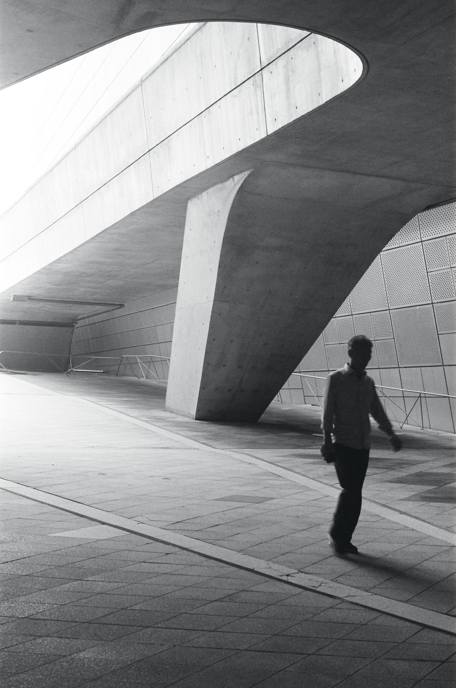
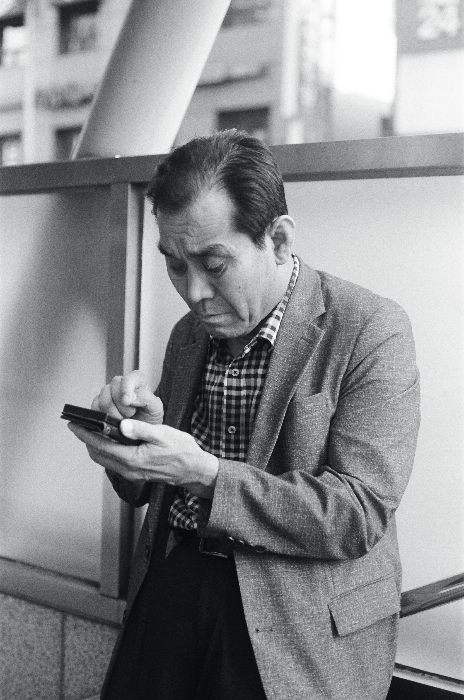
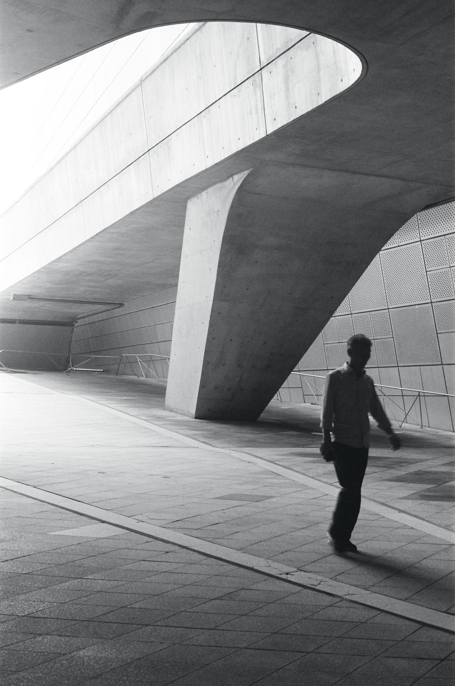
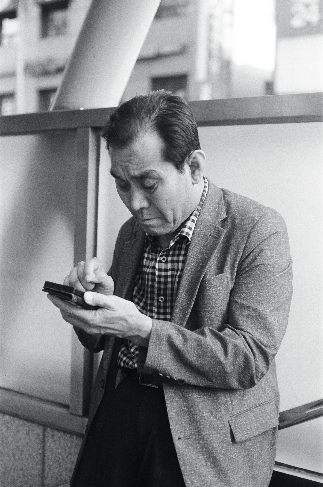
 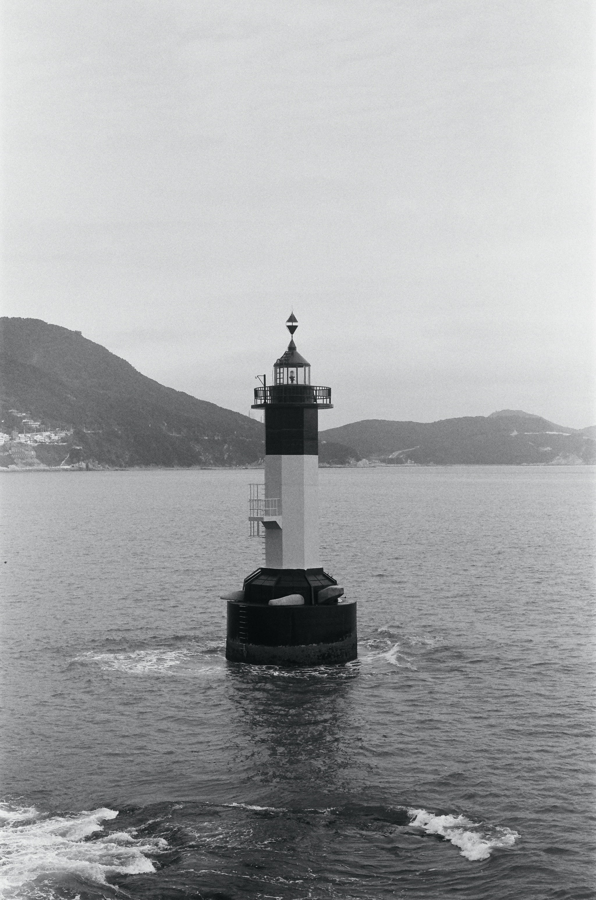
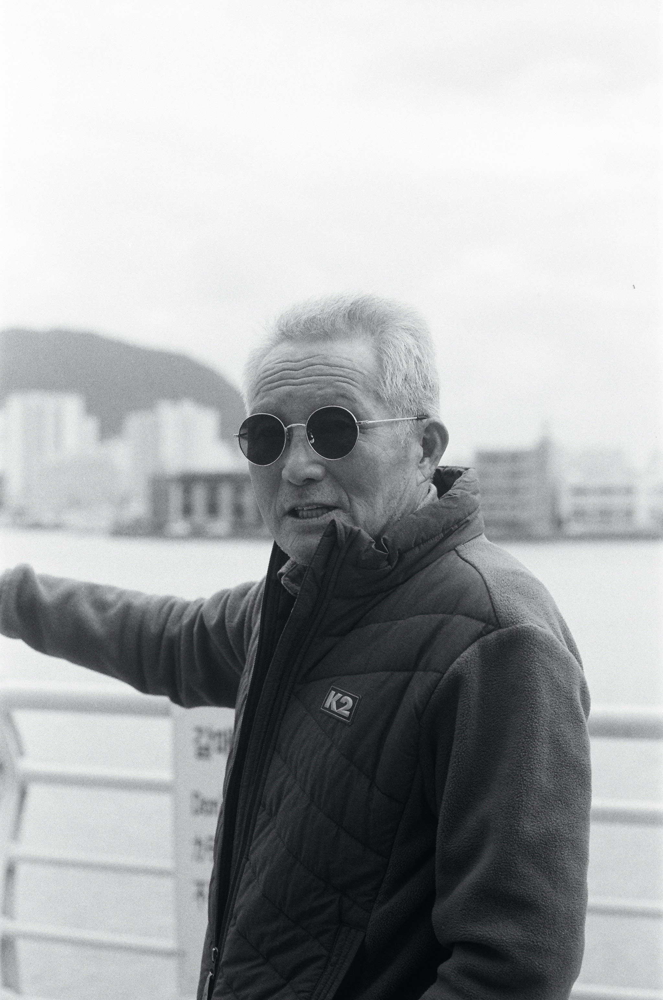
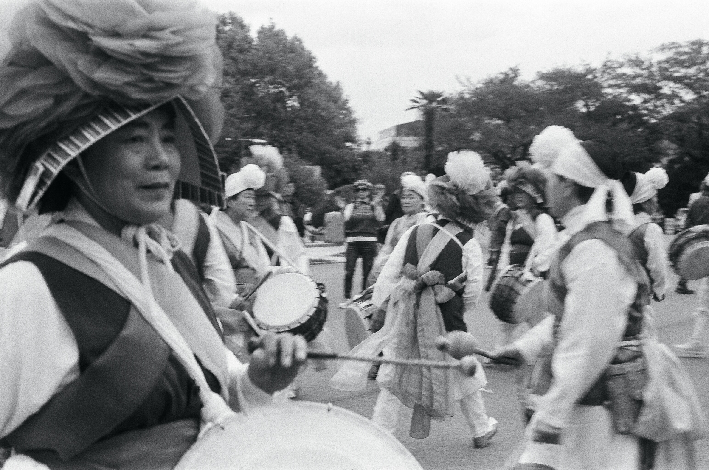
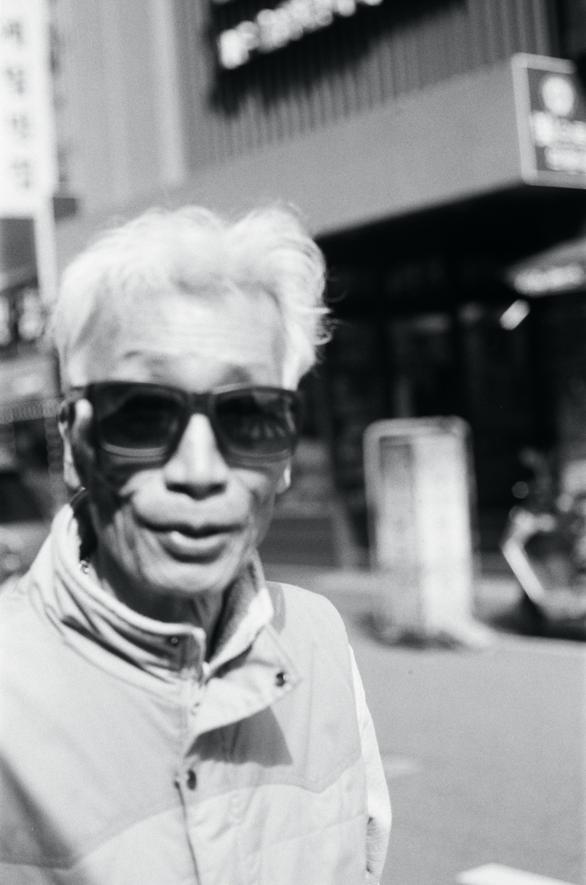
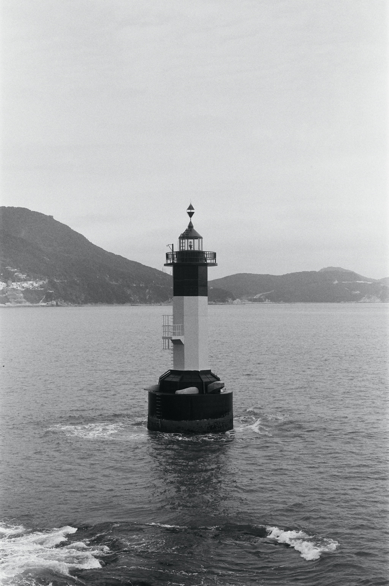
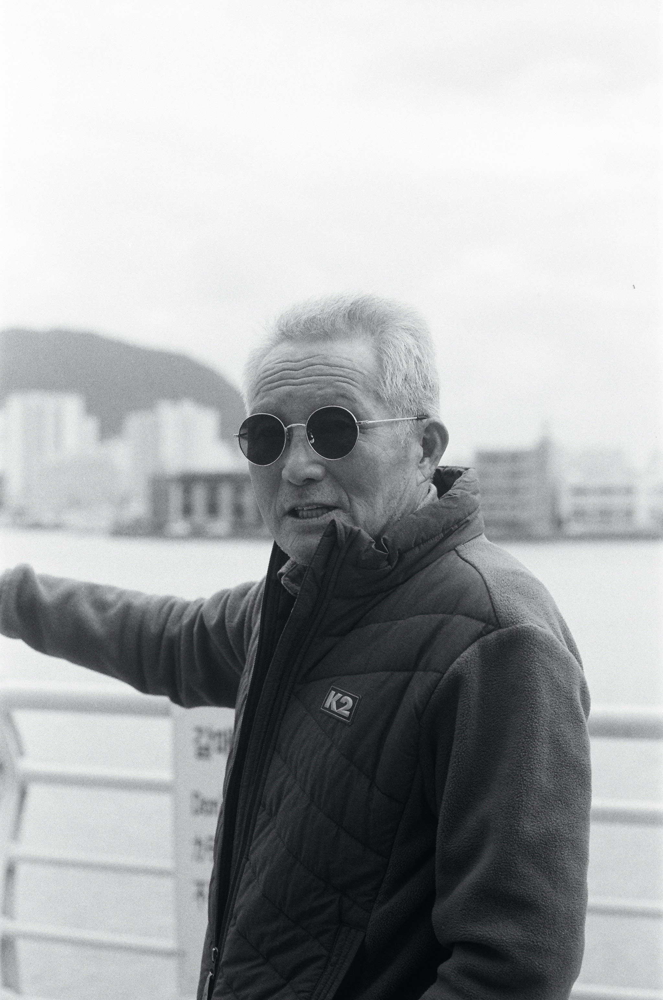
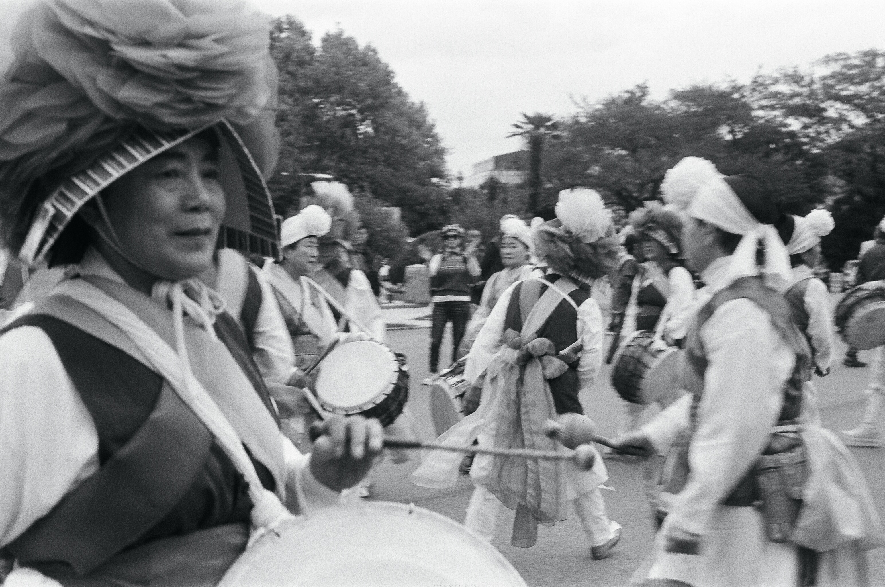
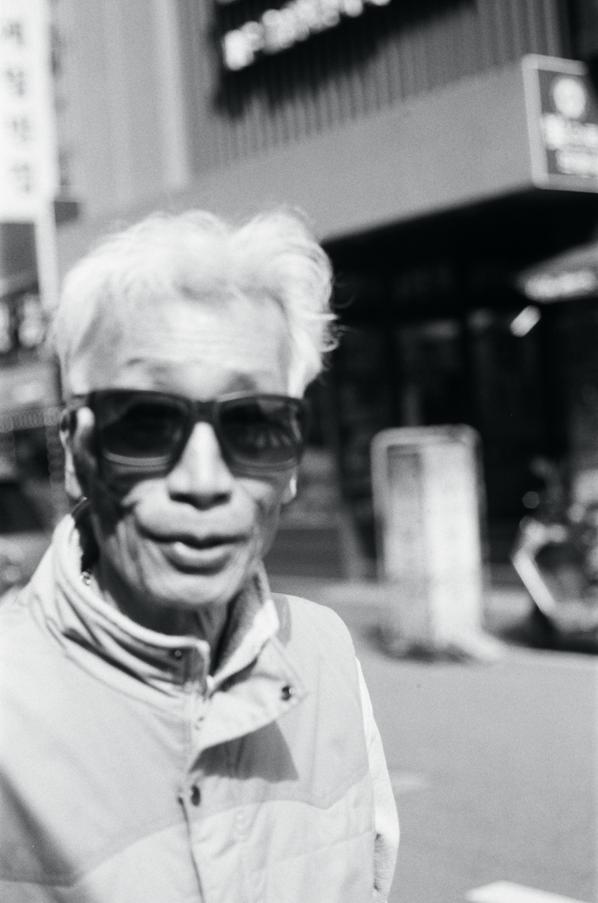